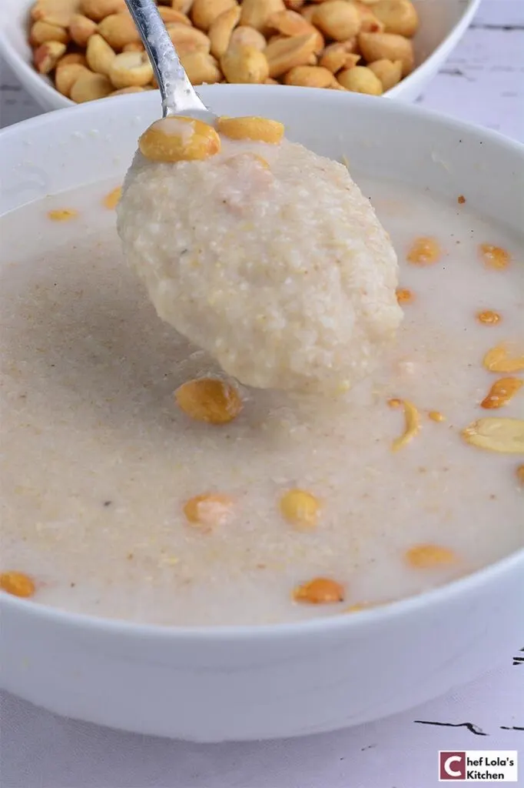

How to make Nigerian Garri

Description
Garri is a staple food for many Nigerians
It is grinded cassava and is a good source of carbs
Ingredients
- Garri Powder
- Sugar
- Groundnuts
- Water
Steps
- Pour the garri powder into a bowl
- Add your Groundnuts and sugar
- Add your desired level of water
- Drink and enjoy
Back to Home